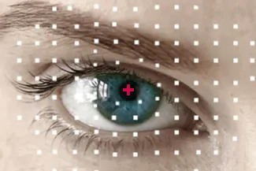

EYE CARE SERVICES IN Fort Myers

Our eye care center in Fort Myers offers a full range of eye health services to clients of all ages, from children to older adults. With a complete array of expert eye care services, Dr. Brittany Degler is dedicated to helping you enjoy healthy eyes and sharp vision. Whether you need a new pair of eyeglasses or treatment for an eye disease, our Fort Myers optometric team provides cutting-edge eye and vision care.
Eye Exams, Eye Emergencies & More
We serve every individual with a superior standard of services for sharp vision and healthy eyes! Our highly qualified optometric team offers a full range of personalized vision care services, including routine vision tests, comprehensive eye exams, advanced management of ocular disease, dry eye treatment, specialized pediatric eye care, contact lenses fittings, and a fabulous optical collection of high-fashion eyeglasses for every member of your family. No matter what you need, we use the latest, advanced technologies and premier skill to ensure your precise vision prescription and detailed diagnosis.
At our modern optometry practice, we believe that the best eye care is founded upon open communication and trust between eye doctor and patient, so we invest in getting to know you – your vision needs, health condition, and lifestyle preferences. We are pleased to be your quality one-stop center for clear, comfortable, and healthy eyesight!
Eye Care Services:

Cataract Co-Management in Fort Myers, FL
Riverside Family Eye Care works closely with leading cataract surgeons in Fort Myers to guide patients through every stage of cataract surgery, from evaluation to post-operative care. Our optometrists ensure your eyes heal properly and your vision is sharp, comfortable, and clear. With compassionate support and advanced technology, we make your surgical experience simple and reassuring.
Complete eye exams are not just for updating your prescription. Learn more about what your eye doctor will screen for, what to expect at your appointment, some of the advanced technology we use, and special considerations for pediatric and infant eye care.
A contact lens exam provides all of the measurements and testing that are required to determine if your eyes are suitable for contact lens wear. We are able to fit most patients (even hard-to-fit) and will generate your contact lens prescription.
Eye conditions can range from mild to severe. While some are chronic, others may resolve on their own. Here's a short list of common eye conditions we treat, such as astigmatism, dry eye syndrome and presbyopia.
At Riverside Family Eye Care, we diagnose and manage ocular diseases such as Glaucoma, Macular Degeneration, Diabetic Retinopathy and Cataracts.

Myopia Management in Southwest Florida
Learn how personalized myopia management can help slow nearsightedness in children using specialized glasses, contact lenses, overnight lenses, or atropine drops.

Eye Emergencies (Pink/Red Eyes) in Fort Myers
Did you know your optometrist can help you with red eyes, pink eye, sore eyes, foreign body removal and eye emergencies?
LASIK & Refractive Surgery Co-Management in Fort Myers, FL
If you're ready for an alternative to glasses or contacts look to Fort Myers for co-management of LASIK, cataract, & other ocular surgery in Fort Myers.

Dry Eye Treatment in Fort Myers, Florida
Identify the cause of dry, irritated eyes with a comprehensive eye exam and targeted treatment. Personalized eye care helps improve comfort and tear stability.

Everything you need to know about eye exams, contacts, dry eye, and more.